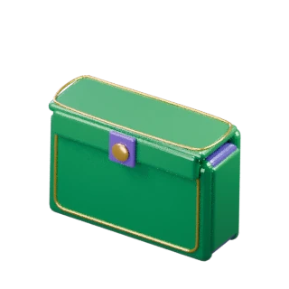

Свобода и независимость
Возможность работать из дома, путешествовать и самостоятельно организовывать свой день, не привязываясь к офису или конкретному городу. Для торговли нужны компьютер, интернет и знания.
MONEY TREND / ДИЗАЙН-ПРЕДПРОСМОТР
Все четыре 3D-иконки анимированы. Иконки на главной странице не заменены.
Анимации зациклены и воспроизводятся без звука. При уменьшении движения показываются статичные кадры.
Режим телефона ограничивает ширину макета до 390 px; это предпросмотр ширины, а не эмуляция устройства.
Не удалось загрузить один из файлов анимации. Обновите страницу.
03 / ПОЧЕМУ ВЫБИРАЮТ ТРЕЙДИНГ
Возможность работать из дома, путешествовать и самостоятельно организовывать свой день, не привязываясь к офису или конкретному городу. Для торговли нужны компьютер, интернет и знания.
В трейдинг можно прийти в любом возрасте. Для этого не обязательно поступать в институт на пять лет. Освоение профессии требует времени, знаний и практики.

Не обязательно сразу оставлять основную работу или бизнес. Трейдинг можно осваивать постепенно, совмещая обучение и практику с привычной деятельностью. По мере накопления опыта и достижения стабильных результатов он может стать вашим основным источником дохода.
В трейдинге нет фиксированного оклада или установленного работодателем потолка дохода. Возможности финансового роста связаны с размером капитала, знаниями, опытом, дисциплиной и грамотным управлением рисками.